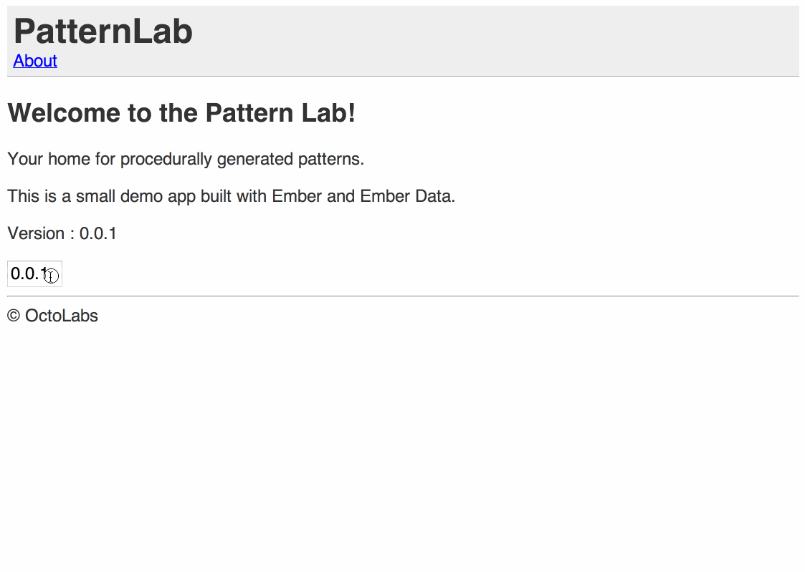

Supercharge your productivity with Ember.js
Supercharge your productivity with Ember.js
Ember for Rails* Developers
*Or other server side MVC
A bit about me |
|
Jeremy Green - ConsultantOrganizer of OkcRuby.org |
|

|
@jagthedrummer jeremy@octolabs.com http://www.octolabs.com/ |
Things I Enjoy : Dopamine, SerotoninOther Interests : Drumming, Photography, and Brewing |
|
A talk in two parts
- Compare/Contrast Ember <=> Rails
- Step through building a small app
Set the stage
Set the stage
Where does the face
of your web app live?
Where is it generated?
"Traditional" web apps
- Generate a giant string of HTML on the server
- Deliver a fully formed 'document' to the browser
- Apply a sprinkle of JavaScript
- Replace bits of markup via AJAX
Single page apps
- Deliver empty application assets to the browser
- Pull/push raw data via JSON
- Assemble the 'document' in the browser
Challenges of SPAs
Challenges of SPAs
- Rebuilding the
atag - Data retrieval & display
- User interaction
- Data binding
- Manipulating the URL
- Setting up initial state
Ember to the rescue!
Ember to the rescue!
Ember strives to solve all of these problems
in an opinionated way
MVC-ish
NOT server side MVC
Many of the same terms
but sometimes they mean different things
MVC+
- Model
- View
- Controller
- Router
- Route
- Template
where Ember == Rails
where Ember == Rails
Router == config/routes.rb
Connect URLs to code paths
# Rails config/routes.rb
Rails.application.routes.draw do
get 'about' => 'static_pages#about', :as => :about
end
// Ember Router
App.Router.map(function(){
this.route('about');
});
where Ember == Rails
Model == Model
Object wrapper for business data
# Rails db/schema.rb
create_table "patterns" do |t|
t.integer "p1"
t.integer "p2"
t.integer "p3"
# ...
end
class Pattern < ActiveRecord::Base
def name
"#{p1}-#{p2}-#{p3}"
end
end
where Ember == Rails
Model == Model
Object wrapper for business data
App.Pattern = DS.Model.extend({
p1 : DS.attr('number'),
p2 : DS.attr('number'),
p3 : DS.attr('number'),
name : function(){
return this.get('p1') + '-' +
this.get('p2') + '-' +
this.get('p3');
}.property('p1','p2','p3')
});
where Ember != Rails
where Ember != Rails
Rails : view == template
Ember : view != template
Template == Template
Markup for UI
Ember Views =~ JS Sprinkles
Interaction & DOM Logic
Ember Components are VERY similar
Components & Views
Interaction & DOM logic
This is the place for jQuery DOM selectors and
integration with other JS libs.
Components vs. Views
Component
- Isolated (No application context)
- Only knows about whatever you pass in to it
View
- Not-Isolated (Has appication context)
- Knows about the controller for the current template
Use Components
if possible
where Ember != Rails
What is a Route?
# Rails config/routes.rb
get 'about' # <-- This line is commonly called a route.
// Ember Router
this.route('about'); // <-- This line is commonly called ???
// A line in the router?
// It is NOT a Route.
where Ember != Rails
Rails : route IN the router
Ember : Route AFTER the router
where Ember != Rails
What happens after URL mapping?
# app/controllers/pages_controller.rb
class PagesController < ApplicationController
def about
@authors = Author.all
end
end
App.AboutRoute = Ember.Route.extend({
model : function(){
return this.store.find('author');
}
});
where Ember != Rails
So Ember Route == Rails Controller?
Not exactly
Route =~ GET Controller actions
Setup data for user interaction (index, new, edit, show)
where Ember != Rails
So, what about other
Rails controller actions?
Controller =~ [POST|PUT|DELETE] Controller actions
Handle user interactions and input (create, update, delete)
where Ember != Rails
Ember Controllers
App.PatternsNewController = Ember.ObjectController.extend({
actions : {
savePattern : function(){
this.get('model').save();
this.transitionToRoute('pattern',this.get('model'));
}
}
});
Part 1 Wrap Up
Part 1 Wrap Up
Ember is opinionated
Don't try to fight it
Just learn about
those opinions
Handy comparisons
| Ember | =~ | Rails |
|---|---|---|
| Router | =~ | config/routes.rb |
| Model | =~ | Model |
| Template | =~ | Template |
| Views | =~ | JS Sprinkles |
| Route | =~ | GET Controller actions |
| Controller | =~ | [POST|PUT|DELETE] Controller actions |
When to use Ember?
When NOT to use Ember?
PatternLab Demo
PatternLab Demo
http://emberjs.jsbin.com/falat/8/edit?outputThe Plan
The Plan
- State a Goal
- Rails way (sometimes)
- Ember way
- GOTO 1
Getting Started
Getting Started
Starting With A Very Simple App
Rails
# config/routes.rb
Rails.application.routes.draw do
root :to => 'static_pages#home'
end
This app is useless!
# app/controllers/static_pages_controller.rb
class StaticPagesController < ApplicationController
end
Ember
App = Ember.Application.create();
<script type="text/x-handlebars">
Welcome to the Pattern Lab!
Your home for procedurally generated patterns.
This is a small demo app built with Ember and Ember Data.
</script>
Ember "magic" at work.
Only write the parts you need.
Ember will 'auto generate'
any parts of the stack
that you don't write
If you wanted to be explicit
App = Ember.Application.create();
App.Router.map(function(){
this.route('index',{ path:'' })
});
App.IndexRoute = Ember.Route.extend({});
App.IndexController = Ember.ObjectController.extend({});
App.IndexView = Ember.View.extend({});
<script type="text/x-handlebars" id="index">
<h1>This app is verbose AND useless!</h1>
</script>

Don't write it if you don't need it!
Application layout
Rails
<html>
<head>...</head>
<body>
This is the layout
<%= yield %>
</body>
</html>
This app is useless!
Ember
Adding a page
Rails
# config/routes.rb
Rails.application.routes.draw do
# ...
get 'about' => 'static_pages#about', :as => :about
end
This app has not gotten any more useful...
<%= link_to 'About', about_path %>
Ember
App.Router.map(function(){
this.route('about');
});
Aside
Templates
The markup for the stuff that
a user actually sees
Handlebars
Handlebars templates are dumb

They can't contain much logic.
Router
Browser URL logic
The 'map' for distinct parts of your app
gives you bookmarkable/shareable URLs within your app
handles reading/writing the URL bar
passes 'path variables' into your Route
http://emberjs.jsbin.com/falat/3#/about
Rendering Partials
Rails
<%= render 'layouts/footer' %>
© OctoLabs
Ember
Displaying Data
Rails
# app/controllers/static_pages_controller.rb
class StaticPagesController < ApplicationController
def about
@about_data = {
:version => "0.0.1"
}
end
end
About
Version : <%= @about_data[:version] %>
Route
Controller setup
Model creation/lookup/filtering
Ember
App.IndexRoute = Ember.Route.extend({
model : function(){
return {
version : "0.0.1"
};
}
});
Data Binding

Models
Object wrapper for data
Rails
# in db/schema.rb
create_table "patterns" do |t|
t.integer "p1"
t.integer "p2"
t.integer "p3"
t.datetime "created_at", :null => false
t.datetime "updated_at", :null => false
end
class Pattern < ActiveRecord::Base
def name
"#{p1}-#{p2}-#{p3}"
end
end
Rails
resources :patterns
class PatternsController < ApplicationController
def index
@patterns = Pattern.all
end
end
Latest Patterns
<% @patterns.each do |pattern| %>
- <%= pattern.name %>
<% end %>
Ember
App.Pattern = DS.Model.extend({
p1 : DS.attr('number'),
p2 : DS.attr('number'),
p3 : DS.attr('number'),
name : function(){
return this.get('p1') + '-' +
this.get('p2') + '-' +
this.get('p3');
}.property('p1','p2','p3')
});
App.Router.map(function() {
// ...
this.resource('patterns');
});
Ember
App.PatternsRoute = Ember.Route.extend({
model : function(){
return [this.store.createRecord('pattern',
{ p1 : 1, p2 : 2, :p3 : 5}
)];
}
});
Fixture Adapter
App.ApplicationAdapter = DS.FixtureAdapter;
App.Pattern.reopenClass({
FIXTURES: [
{ id: 1, p1 : 1, p2 : 2, p3 : 5},
{ id: 2, p1 : 42, p2 : 142, p3 : 242},
{ id: 3, p1 : 100, p2 : 200, p3 : 300}
]
});
App.PatternsRoute = Ember.Route.extend({
model : function(){
return this.store.find('pattern');
}
});
Dynamic routes
&
Nested routes and templates
Ember
App.Router.map(function() {
this.resource('patterns',function(){
this.resource('pattern', { path: '/:pattern_id' });
});
});

Rendering a pattern
Components and/or Views
Which one to use?
Components & Views
Interaction & DOM logic
This is the place for jQuery DOM selectors and
integration with other JS libs.
Probably.
Differences
Component
- Isolated (No application context)
- Only knows about whatever you pass in to it
View
- Not-Isolated (Has appication context)
- Knows about the controller for the current template
Use Components
if possible
Pattern Display Component
{{pattern-display pattern=model width="256" height="256"}}
App.PatternDisplayComponent = Ember.Component.extend({
drawPattern : function(){
var ch = new Chromanin(256,this.get('canvasId')),
p1 = this.get('pattern.p1'),
p2 = this.get('pattern.p2'),
p3 = this.get('pattern.p3');
ch.initlayers(256,256);
ch.checkerBoardLayer(0,16,16,p1,p2,p3,0,0,128);
ch.sineDistort(0,0,0.100000001490116,p1,p2,p3);
ch.addLayers(0,1,4,1,1);
ch.addLayers(4,2,4,1,1);
ch.addLayers(4,3,4,1,1);
ch.writeCanvas();
}
// ...
});
App.PatternDisplayComponent = Ember.Component.extend({
// ...
didInsertElement : function(){
this.drawPattern();
},
automaticUpdate : function(){
Ember.run.next(this,function(){
this.drawPattern();
});
}.observes('pattern','pattern.p1','pattern.p2','pattern.p3'),
canvasId : function(){
return "canvas-" + Math.floor((Math.random() * 1000000) + 1);;
}.property('pattern.id')
});
Create a new pattern
App.Router.map(function() {
this.resource('patterns',function(){
this.resource('pattern', { path: '/:pattern_id' });
this.route('new');
});
});
{{#link-to 'patterns.new'}}New Pattern{{/link-to}}
App.PatternsNewRoute = Ember.Route.extend({
model : function(){
return this.store.createRecord('pattern');
}
});
App.PatternsNewController = Ember.ObjectController.extend({
actions : {
savePattern : function(){
this.transitionToRoute('pattern',this.get('model'));
},
randomize : function(){
this.setProperties({
p1 : Math.floor((Math.random() * 1000) + 1),
p2 : Math.floor((Math.random() * 1000) + 1),
p3 : Math.floor((Math.random() * 1000) + 1)
});
}
}
});
Controllers
Business logic
Manipulaiton of models and triggering of related events.
Also a good place for transaction management.
Controllers come in two flavors
- ObjectController - represents one single model object.
- ArrayController - represents a collection of objects.
REST Adapter
App.ApplicationAdapter = DS.RESTAdapter.extend({
host : 'http://pattern-lab-api.herokuapp.com'
});
savePattern : function(){
var _this = this;
this.get('model').save().then(function(pattern){
_this.transitionToRoute('pattern',pattern);
});
}
Thanks For Watching!
|
@jagthedrummer jeremy@octolabs.com |
|